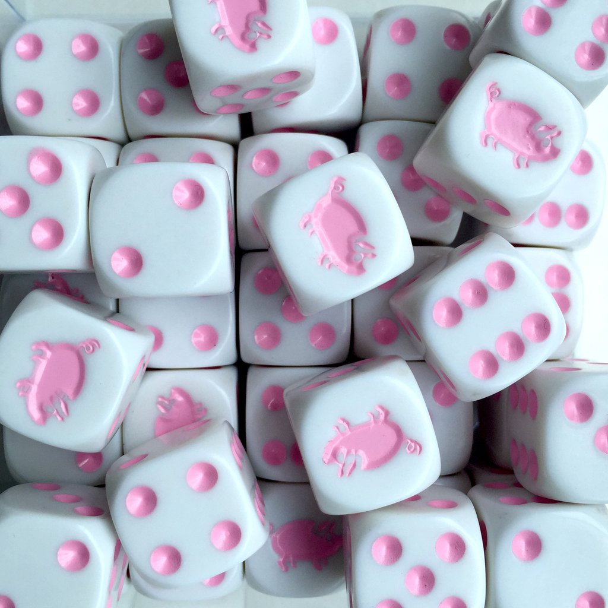

Computer Dice Strategies

At this website you will find three main play styles for the Computer. Each Style has its strengths and weaknesses
Cautious - This play style is extremely straight forward. The Computer believes that any points gained are better than lost so at the end of every successful toss the cautious player holds. They are very consistent but rarely threatening as the most points they can gain in one round is only twelve
Random - This play style decides on holding or throwing based on pure chance. The player has a fifty-fifty chance of tossing or holding every round up to three tosses. He is not willing to chance it after three attempts. The random chance is a surprisingly strong competitor
Greedy - This is the final play style. The Greedy player attempts three throws regardless of outcome or possible points lost. This style is the exact opposite of the Cautious player and has huge gains but will forfeit many points in its search for more.
The final play style is not so much a real strategy or style but a cheater plain and simple. The Cheater never bothers with dice but knows if he averages 25 he will easily beat any competior. Thus he always rolls 25. Try your luck at facing him
Try facing all the play styles - the best strategy is often an adaptive one, for the best chance of success switch your strategy depending upon the player your facing